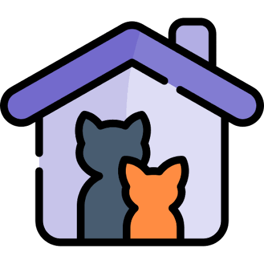

Reporte de Emergencias (Ciudadanos y Voluntarios)
Registra de inmediato el hallazgo de un animal en situación de riesgo indicando su ubicación y nivel de urgencia.

Plataforma integral para la gestión de reportes, atención veterinaria y adopciones
Este sistema permite coordinar de manera eficiente el ingreso de animales rescatados (perros, gatos y fauna silvestre), asignar voluntarios o veterinarios responsables y dar seguimiento a cada caso hasta su recuperación o adopción.
| Estado del Proceso | Perros | Gatos | Fauna Silvestre | Subtotal |
|---|---|---|---|---|
| Rescatados (Ingreso reciente) | 4 | 3 | 2 | 9 |
| En Evaluación / Tratamiento | 6 | 5 | 3 | 14 |
| Recuperados / En Adopción | 8 | 7 | 0 | 15 |
| Adoptados / Liberados | 22 | 19 | 11 | 52 |
| Total Registrado | 40 | 34 | 16 | 90 |
Registra de inmediato el hallazgo de un animal en situación de riesgo indicando su ubicación y nivel de urgencia.
Consulta la tabla maestra de rescates, verifica los responsables asignados y revisa las observaciones clínicas.